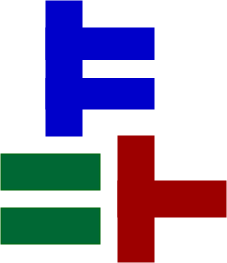

Title: “Real World Coq – An introduction to mechanically verified mathematical proofs”
| Sept 5-9, 2022 | Sabanci University (SU), Istanbul |
Instructor: Emilio J. Gallego Arias (Inria) Coordinator: Süha Mutluergil (Sabanci University)
Duration of the course: 5 days
See the attending the course section for more information on attending.
This course has been financed by the COST Action  , EuroProofNet , supported by COST (European Cooperation in Science and Technology)
Introduction
Proofs constitute the backbone of both Mathematics and Computer Science (CS). Doing a mathematical proof requires domain knowledge, solid reasoning skills and applying reasoning techniques carefully step-by-step. It is a tedious and error-prone task. For this reason, computer scientists aim to develop programs for mechanizing and/or automating the proof process. Coq is an interactive proof assistant developed for this purpose. Using Coq, one can define mathematical objects or computer programs, express theorems or assertions on these entities, and mechanically check correctness of them by either interacting with Coq or automatically by using so called proof tactics depending on the availability of an applicable one.
Coq is an industrial-scale tool successfully used for both research and commercial purposes. In 2005, famous four color theorem was proven in Coq yielding a proof library as a by product with general purpose features that could be used in many settings. AbsInt company develops and maintains an optimized, commercially used C compiler called CompCert. CompCert is specified, programmed and verified in Coq, and its performance is comparable with canonical GCC compiler.
Coq is a free open-source software developed and maintained by a large and active user community. New extensions and Coq based tools are frequently introduced. It has a sub-reddit and active support can be easily found on Stack Overflow and the new Stack Exchange for proof assistants, the Coq tag is also useful.
Coq is mainly developed by Inria - French public computer science institute. Its development and maintenance is managed by the Coq Team, but the development follows a collaborative model and releases usually see dozens of external contributors. Dr. Emilio Jesus Gallego Arias, the instructor for this workshop, is a member of the core team.
This course aims to introduce Coq proof assistant through basic concepts and various exercises. The course will be conducted by Dr. Emilio Jesus Gallego Arias (primary instructor), a member of the Coq Core Team, The course will consist of lectures including interactive and hands-on exercises. The lectures will be conducted in English.
The first edition of the course will be held at Sabanci University, Istanbul as a workshop between 5-9 September. Lectures will be hybrid. The attendance is limited to 20 physical and 10 online participants. Application information and further details on the workshop is provided below.
Schedule and Syllabus:
The course will take place using an intensive schedule, with 3 hours in the morning for teaching, and 3 hours in the afternoon for exercises (with the corresponding breaks).
Attendants are expected to follow the instructor along, as the lessons themselves are interactive and allow the attendants to interact with the Coq system.
See the references
Day 1 (Sep 05th, 2022): Introduction to type theory as a mathematical language
We will review the formal logical language that is at the base of interactive proof assistants such as Coq or Lean.
We will introduce the concept of “functional programming”, which lies at the root of the construction of Coq (or Lean) proofs, and review some common patterns often used in the field.
Lesson links and schedule
| Time | Description | Links |
|---|---|---|
| 08:40–10:10 | Welcome, introduction to the Coq Proof Assistant | slides |
| 10-10–10:40 | Break | |
| 10:40–12:10 | Type Theory as a Mathematical Language | html file |
| 12:10–13:10 | Lunch | |
| 13:10–14:10 | Exercise Session I | html file solutions |
| 14:10–14:30 | Break | |
| 14:30–15:30 | Exercise Session II |
Day 2 (Sep 06th, 2022): Core Coq tactics and proofs
We will introduce the Coq proof assistant more in depth, and review how it is different from other programming languages.
We will discuss Coq datatypes (“inductive types”), which are a powerful tool for the modelling of mathematical concepts, and we will discover the main proof techniques, tactics, and library objects available in Coq and the Mathematical components library.
We will place special focus on the role of libraries and modular proofs.
Lesson links and schedule
| Time | Description | Links |
|---|---|---|
| 08:40–10:10 | Coq Core Tactics and Proofs | html file |
| 10-10–10:40 | Break | |
| 10:40–12:10 | Structures and Libraries | html file |
| 12:10–13:10 | Lunch | |
| 13:10–14:10 | Exercise Session I | html file solutions |
| 14:10–14:30 | Break | |
| 14:30–15:30 | Exercise Session II |
Day 3 (Sep 07th, 2022): Mathematics verification
In this session, we will discuss the proof style used to the construction of proofs founds in the mathematics literature.
We will discuss libraries and proof techniques for (linear) algebra, and group theory.
Lesson links and schedule
| Time | Description | Links |
|---|---|---|
| 08:40–10:10 | Mathematics verification | html file |
| 10-10–10:40 | Break | |
| 10:40–12:10 | Mathematics verification | |
| 12:10–13:10 | Lunch | |
| 13:10–14:10 | Exercise Session I | html file |
| 14:10–14:30 | Break | |
| 14:30–15:30 | Exercise Session II |
Day 4 (Sep 08th, 2022): Program Verification
In this lecture, we will give an overview of the main techniques used to verify the correctness of programs, including the definition of custom program logics, and compiler correctness by simulation.
In this session, we will follow a proof style often found in the programming language literature, which is a bit different from the one used by mathematicians.
Lesson links and schedule
| Time | Description | Links |
|---|---|---|
| 08:40–10:10 | Program Verification | html file |
| 10-10–10:40 | Break | |
| 10:40–12:10 | Program Verification | |
| 12:10–13:10 | Lunch | |
| 13:10–14:10 | Exercise Session I | |
| 14:10–14:30 | Break | |
| 14:30–15:30 | Exercise Session II |
Day 5 (Sep 09th, 2022): Advanced topics and Extended Exercise session.
We will briefly discuss some advances topics and trends in the area, to proceed with an extended tutorial session to allow participants to wrap their exercise sheets.
Lesson links and schedule
| Time | Description | Links |
|---|---|---|
| 08:40–10:40 | Advanced topics | |
| 10-40–11:10 | Break | |
| 11:10–12:10 | Exercise Session I | |
| 12:10–13:10 | Lunch | |
| 13:10–14:10 | Exercise Session II | |
| 14:10–14:30 | Break | |
| 14:30–15:30 | Exercise Session III |
Attending
Important Dates
Application Deadline: 31 August Notifications: 1 September Workshop: 5-9 September
Registration
Only registered participants are allowed to attend the workshop. The capacity is limited to 20 pyhsical, 10 online people. For registraion (both online and physical), please fill the following form. Participants will be picked by first come first served principle.
Registration is free for both online and physical attendance. Unfortunately, no funding is available for transportation, accoommodation and food, not even for the students.
Required Software
Each participant is expected to bring their own laptop. A laptop is required as the course is interactive.
The course requires a recent version of the Chrome Web Browser. Other browsers may work, but they are supported at your own risk.
Lessons will take place using the jsCoq software. Please, click on the above link and check the tutorial works on your computer.
Internet connection is much recommended but not required, let us know if you can’t connect to internet and we will find a way to distribute the files.
Location
IMPORTANT UPDATE:
Lectures will take place physically at
Sabanci University, FENS (Faculty of Engineering and Natural Sciences) L029
everyday between 08.40 - 15.30.
Check the campus map below for locating the room. In this map, FENS is marked with number 11 and L029 is at the L (-1) floor. Entrance through the FASS side (building number 12) is to the G (0) floor and entrance through the cafeteria (building number 21) is to the 1st floor. So, you have to go 1 floor down in the former case and 2 floors down in the latter case. Then, you can locate the room looking at the floor plans (basically L029 is at the corner with sides looking to buildings 12 and 13).
 .
.
Course Forum
There is a Course Forum hosted at Coq’s Zulip.
Transportation
The workshop will take place at SU Tuzla Campus. It is adjacent to Istanbul Anadolu Highway (TEM, E-80) and 20 minutes drive away from Sabiha Gokcen International Airport.
Transportation serviceses are mainly provided by shuttles of Gursel Turizm. Shuttle schedule can be seen at https://www.sabanciuniv.edu/en/shuttle-hours
Otherwise, IETT bus: KM18 can be taken, which has a stop directly inside of Sabanci University.
Another alternative is taking a taxi from from Tavsantepe metro station, which can be more costly but more comfortable as well.
Note that Gursel Shuttles also have departures from Pendik metro station, which can be useful for those who want to use metro-shuttle combination.
Accommodation
There are no housing options inside Sabanci University Campus. Unfortunately, the guesthouse will be closed for maintenance during the workshop dates. Only in campus accommodation option for workshop participants is student dormitories. 2-person rooms are reserved for participants. Rates for staying single in the room is 800 try/night and sharing the room with another person is 400 try/night.
SU has a main cafeteria (Akkol) that serves breakfast (07:30 - 10:30), lunch and dinner (11:30 - 20:30) at reasonable prices. In addition, there are alternatives like Kucuk Ev, Subway, Pizza Bulls, Starbucks, Piazza, Kopuklu Kahve and Fasshane inside the campus.
Unfortunately, no funding is available for reimbursing food and accommodation expenses of participants.
Online Participation
If you are registered for online participation, you can join us using the following Zoom link: TBA
Recordings will be temporarily available here: TBA
Contact
For your questions related to the organization, please email to Suha Mutluergil or Yagiz Kilicarslan.